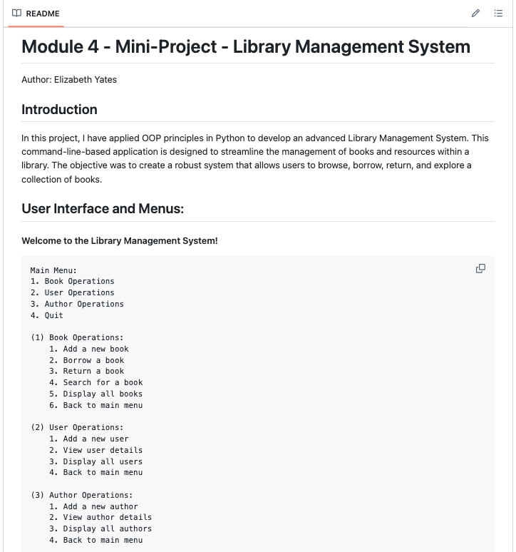
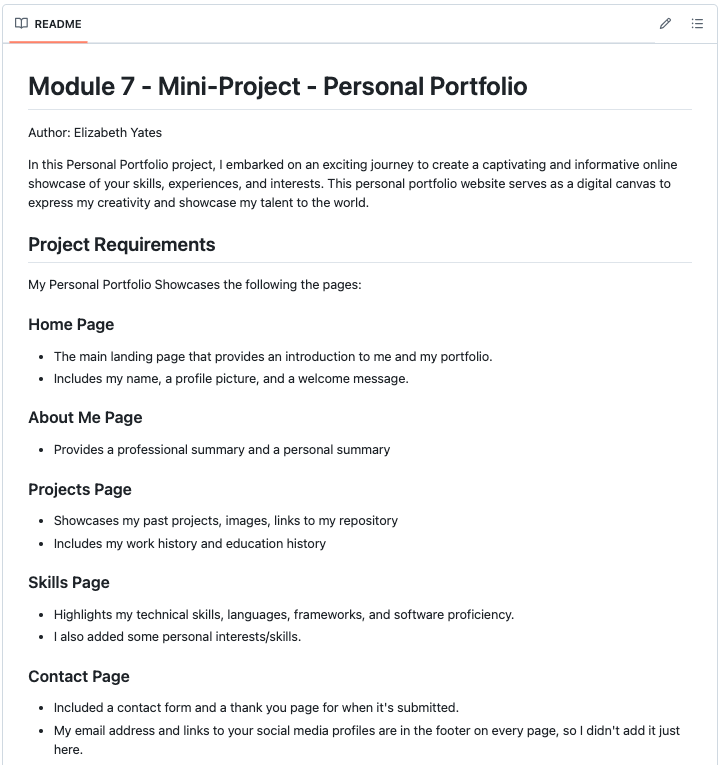

To Do List Application
With this command-line interface app, you can add, view, and delete tasks,
as well as mark them as complete.
Contact Management System
Written in Python, you can add, edit, delete, display, import, and export
contacts on this system.

Library Management System
Applying OOP principles in Python, this CLI app is designed to streamline
the management of books, authors, and users within a library.
Library Management System
An extension of the previous project, this app incorporates a MySQL database.
E-Commerce API
Using Flask-SQLAlchemy to integrate a MySQL database and Postman as the UI,
this app manages the customers, accounts, orders, and products.

Personal Portfolio
Each of these webpages that you're viewing were written in HTML and were part of this project.
To see more repositories and projects, take a look at my GitHub.
Education
Coding Temple | Remote 09/2024 to Present
Full Stack Software Engineer Certification
University of Puget Sound | Tacoma, WA 08/2009 to 05/2013
BS Mathematics
BA Spanish Literature
Minor in Computer Science
Study Abroad in Granada, Spain
Work History
Software Engineer Trainee: Coding Temple | Remote 09/2024 to Present
Developing foundational skills in full stack development through independent projects, utilizing Flask for backend frameworks and building RESTful APIs.
Learning and implementing programming concepts in Python, HTML, SQL, and Flask-SQLAlchemy, with practical experience in MySQL and API testing via Postman.
Demonstrating adaptability and efficient knowledge application, with a focus on backend development and database management.
Senior Financial Editor: Evalueserve Chile | Viña del Mar, Chile 01/2018 to 03/2024
Edited, fact-checked, formatted, and posted content produced by a major index provider, including education, research, commentaries, blogs, social media, multimedia, e-marketing campaigns, and event materials, following style and formatting guidelines and utilized templates to ensure consistency.
Managed client relationships and satisfaction by assessing project objectives and coordinating deadlines., collaborating with content marketing and e-marketing teams in writing descriptions, blurbs, and SEO tags.
Acted as point person for the creation and distribution of e-marketing campaigns in Marketo and for the coordination of imagery and special design templates with the corporate design team using Adobe Workfront.
Performed advanced Microsoft Office activities such as creating VBA macros to standardize chart formatting with the click of a button, which increased productivity by 30%.
Streamlined workflows by successfully transferring the marketing, translation, and editorial teams' pipelines into synched and automated Airtable bases.
English Teacher: Chilean North American Institute | Viña del Mar, Chile 03/2017 to 12/2017
Prepared and taught English language classes for adults, designing curriculum for group and individual lessons.
Simplified complex grammar and vocabulary concepts into easy-to-understand activities.
Year of Travel and Personal Growth 03/2016 to 03/2017
Traveled with my partner throughout Asia, visiting 16 countries in 12 months.
Developed strong cross-cultural communication and adaptability by navigating diverse environments and interacting with people from various backgrounds.
Enhanced problem-solving and organizational skills by planning and managing travel logistics.
Administrative Assistant: Full Pak Bulk Logistics | Santiago, Chile 03/2015 to 12/2015
Reported directly to the General Manager and acted as his personal assistant.
Coordinated office communications, maintained office order, and managed inventory of supplies.
Processed invoices and bills of lading and handled check deposits.
Organized company events and handled executive travel arrangements.
English Professor: DuocUC | Santiago, Chile 03/2014 to 12/2014
Designed and led English courses, preparing students for the TOEIC exam.
Developed curriculum and instructed classes from beginner to advanced levels.
Automation Intern: Genentech Inc. | Hillsboro, OR 06/2011 to 08/2011, 06/2012 to 08/2012
Automated spreadsheets and produced graphical displays for data presentation.